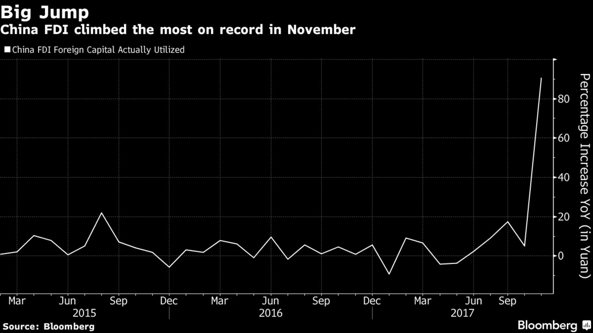

More open attitude for foreign investors in 2018
FDI trends through the past few years show that foreign investors are taking a more cautious approach to investing in China. China has also made cautious moves to open up to foreign investors these years. The most recent FDI statistics, released
by China’s Ministry of Commerce (MOFCOM), illustrate China’s economic performance highlight some developing issues foreign investors should monitor moving forward.
Although China remains a popular investment destination, as evidenced by increased FDI into the high-tech and service industries, macro-economic uncertainty and decreasing manufacturing competitiveness have led to a more cautious approach
by foreign investors.
Although China remains a popular investment destination, as evidenced by increased FDI into the high-tech and service industries, macro-economic uncertainty and decreasing manufacturing competitiveness have led to a more cautious approach
by foreign investors.
Besides, in an historic move in 2017, Beijing said it will lift foreign ownership limits on banks and allow non-Chinese firms to take majority stakes in local securities ventures.
The ministry also cited a number of big projects securing capital as contributing to the climb. Flattering the percentage gain, the November comparison benefited from a low base -- FDI rose 0.9 percent in November 2017.

(Source: Bloomberg)
Foreign direct investment in China edged up 0.3 percent year-on-year to about US$ 12.64 billion in January 2018. That compares with December's figure of around US$ 11.63 billion, which was down 9.2 percent from a year earlier. In 2017, China
FDI rose 7.9 percent.
The business case for Chinese firms investing abroad remains strong. China’s economic growth is slowing as Beijing manages the shift from an investment- and export-led economy to one more dependent on domestic consumption, even as economic activity
picks up in the rest of the world. As Chinese companies acclimate to the new regulations and refocus their FDI efforts within the “encouraged” sectors, outbound FDI is therefore likely to accelerate in 2018.